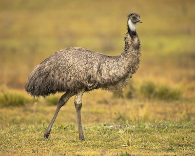
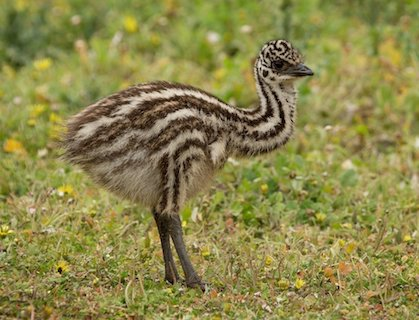

Wow! Based on your answers... You share similarities with the Emu (Dromaius novaehollandiae)

Emus average a height of 5-6 feet tall and can reach running speeds up to 31 miles per hour. Like you, Emus are introverted creatures, prefering a solitary life, but surprisingly make great pets. Emus are also very docile creatures, only attacking if provoked even though many people assume that they are aggressive. Like the Emmu, you are a tall and athletic being who would much rather spend your time alone than with other people.
Want to learn more about this species? Click the Feather!

Click on Ceasar to Restart!